更新记录
枕书每个版本新增的功能和修复的问题。
1.2
即将发布本次亮点
EPUB 排版全面升级
书里写好的版式——整页背景图、各种框、标题、字体效果、脚注、列表、竖排——现在尽量照原书的样子排出来，夜间也看得清。
阅读器引擎自动升级
以前导入的 EPUB，打开时会按新的排版规则自动重新整理一次；阅读进度、书签、划线和想法都留在原处。
跨章翻页更顺
下一章提前在后台排好，翻进新的一章不用等；仿真翻页跨章时也能卷页翻过去，往回翻也一样。
页码按实体书计算
封面、插图、制作说明这些页也各算一页，翻过去页码会跟着变；双页时左右两页各有页码。
EPUB 排版全面升级
这一版重新整理了 EPUB 的排版：书里用样式表写好的版式，尽量照原书排出来；正文的字号、行距、段距、首行缩进仍然跟随你的「排版」设置，书里另外设计的部分（标题、诗、引文、框、注释）照书。下面的截图来自枕书自己的样式测试书。
- 整页背景图与插画页：书为页面设计的背景图（铺满整页、小纹理平铺、拉成页面边框）照原样显示，深色背景上的白字也照书；整页插画单独成页，插画页上不再压着章名和页码；章首铺到页边的插图直接铺到屏幕顶端。
深色背景图上的白字 标题后面的大图 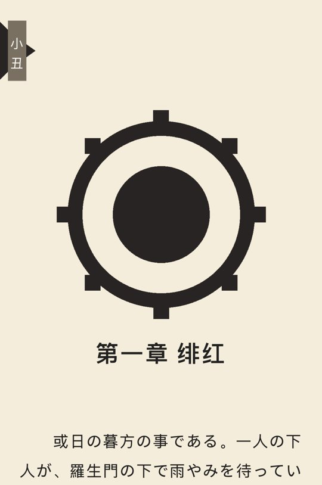
贴着页边的标签 - 框：书里的框照原样画——底色、背景图、圆角（四个角可以各不相同）、实线 / 虚线 / 点线 / 双线边框（四条边可以各不相同）、宽度与居中；聊天气泡、帖子里套着评论的框、贴着文字宽度的小标签都能显示。
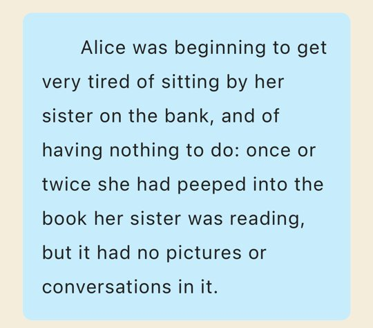
圆角底色框 聊天气泡 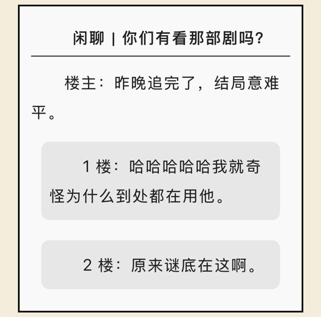
框套框 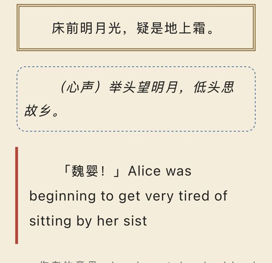
双线、虚线、单边粗线 - 标题与文字：标题照书里写的字号、粗细、颜色排（以前一律按阅读器的标题样式）；字号的各种写法都能读懂（如 x-large、smaller）；斜体在没有斜体字形的中日文字体里自动倾斜，竖排也一样。
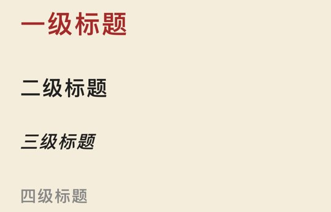
标题层级 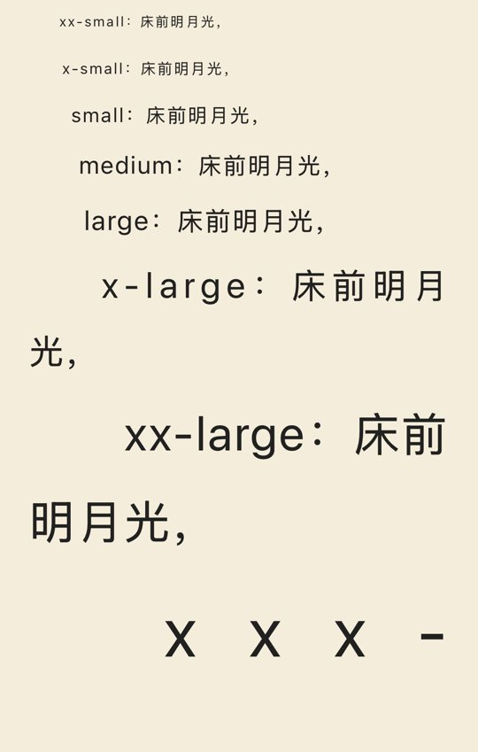
字号 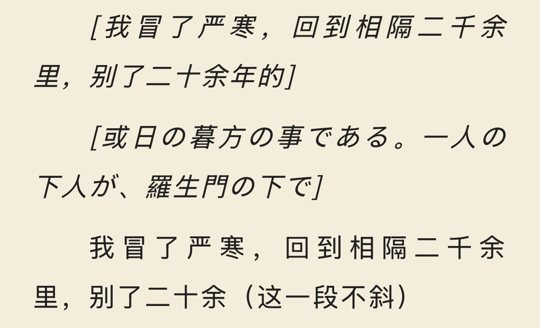
中日文斜体 - 下划线、删除线、着重号：实线、双线、点线、虚线、波浪线和颜色都照书；着重号横排在字的上方，竖排在字的右侧。
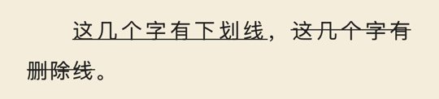
下划线与删除线 着重号 - 诗、引文、列表与分隔线：诗句居中、转行时的悬挂缩进、引文的左右边距照书；项目符号和编号（数字、字母、罗马数字）、分隔线都显示出来。
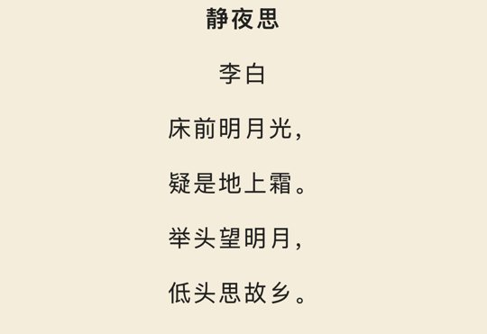
诗 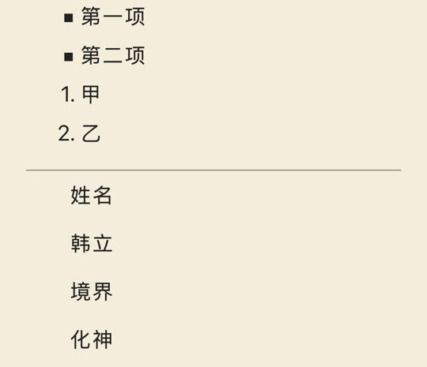
列表与分隔线 - 脚注：注释和正文在同一页的书，点注释标记也能弹出注释卡片；多看格式的注释图标按一个字高显示；注释原文不再夹在正文里。
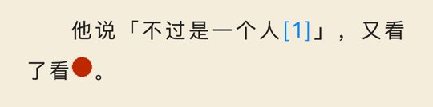
注释标记 - 竖排：书里写明整本竖排的书，导入时自动打开竖排；竖排里的半角括号、引号、破折号等按竖排的写法转过来；着重号、斜体在竖排里也照样显示。
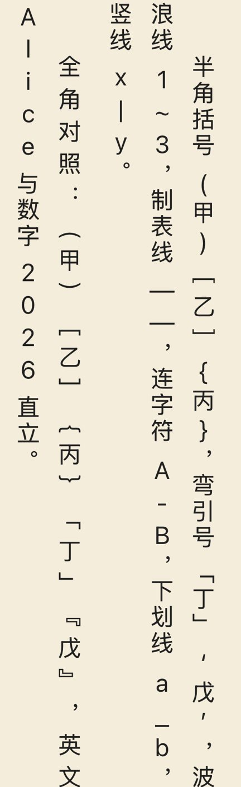
竖排里的括号与符号 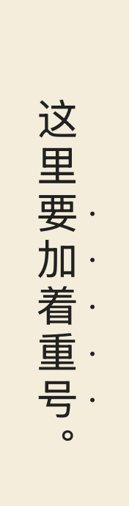
竖排的着重号 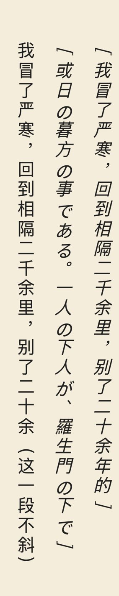
竖排的斜体 - 夜间也看得清：书里写的文字颜色在深色纸上自动调亮；浅色的框换成同色调的深色框，框里的字跟着调；插图在深色纸上稍微压暗；书里写明夜间要反转的线条图会反转，其他图片不反转。
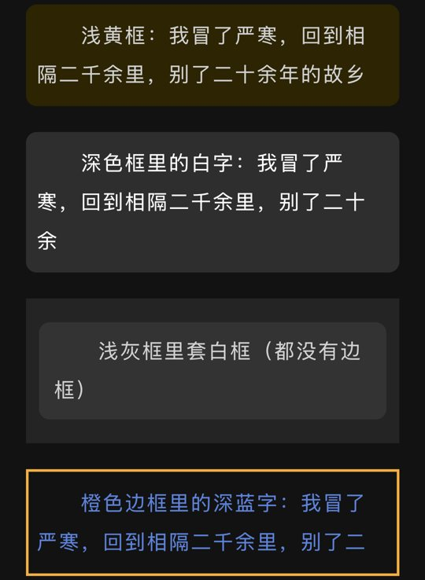
深色纸上的框 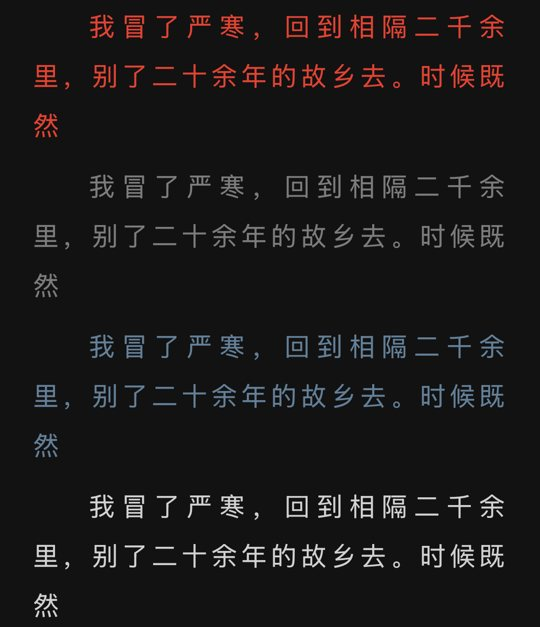
文字颜色 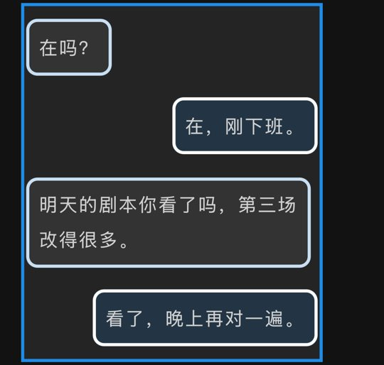
聊天气泡 - 样式表读得更全：常见的选择器写法（子元素、兄弟元素、属性、:first-child、:not 等）、!important、按条件生效的规则（@media、@supports）、加在文字前后的装饰（::before、::after）都能读懂；书的样式和你的阅读设置谁说了算，按 CSS 的层叠规则决定。
- WebP 图片：书里用 WebP 格式的插图也能显示。
- 视频：书里嵌的视频以封面图显示，上面带播放标记，点一下全屏播放；正在听书时会先暂停。苹果播放器原本只出声音、不出画面的一类 HEVC 视频，导入时自动修正，能正常播放。没有封面图的视频，显示书里写好的替代文字。
新功能
- 阅读器引擎升级：排版规则更新后，以前导入的 EPUB 在打开时自动按新规则重新整理一次，屏幕上显示「阅读器引擎升级中」、进度和正在做的步骤；整理完，阅读进度、书签、划线、想法和没写完的想法都留在原处，按标题重新分过章的书也会按原来的格式再分一次。1.1 以前导入、没有保留原件的书，再导入一次同一个文件即可补上原件，之后打开时自动升级。
改进
- 章节识别更准：章名里带逗号（如「第001章 神装大号惨遭删，踢送大明小公爷」）、章名后面直接接着正文（文件转换时丢了换行）的书，现在都能正确分章。已导入的书在「目录」里点「重新识别」即可。
- 更多标题格式可选：「手动选择标题格式」里新增「标题含逗号」和「行首编号」（如「01. 风起」「一、风起」）两类，按书里实际出现的写法列出。
- 重新识别更快，并显示进度：打开「重新识别章节」、以及切换分章方式时显示进度条；大书上的识别时间缩短了约一半。
- 跨章翻页：读到一章快结束时，下一章已经在后台排好，左右翻页、仿真翻页翻进新的一章不用等；仿真翻页跨章（包括往回翻、双页、插画页）也有卷页效果。
- 页码：页码按实体书计算，封面、插图、制作说明、卷名页都算一页；双页时左右两页各显示自己的页码。
- 导入排队：从加号、分享、「用枕书打开」和 Wi-Fi 传书同时导入多本书时，按顺序一本一本导入；Wi-Fi 传书页上显示每本书在排队、导入中、完成或失败。
问题修复
- 修复章节文件很多的书（如上千章的合集 EPUB）打开「重新识别章节」后闪退的问题。
- 修复插图后面、或上一行刚好排满时，下一段开头没有缩进的问题。
- 修复 EPUB 按标题重新分章后，章首插图跑到上一章末尾的问题。
- 修复书里用 WebP 格式的插图页显示成空白的问题。
- 修复注释和正文在同一页的书，点注释标记没有反应的问题。
- 修复阿拉伯文、希伯来文这类从右往左横写的书被提示改用竖排的问题。
- 修复用 Wi-Fi 传书重复传同一本书时，会导入成两本的问题。
- 修复 Wi-Fi 传书收到的书一多，传书卡片超出屏幕、上方被切掉又不能滚动的问题。
- 修复「最近在读」卡片和桌面小组件上的阅读百分比，与书架列表相差 1% 的问题。
- 修复书名本身带书名号时，提示里出现两层书名号（如「《《书名》》」）的问题。
- 修复书的文件损坏、自动修复后，用「重新识别章节」分好的章节变回本书自带目录，书签、划线和想法可能回到旧位置或丢失的问题；自动修复失败时，原来还能读的内容也不再受影响。
- 修复阅读页偶尔整页点不动、菜单出不来的问题。
- 修复用过书内搜索的书关掉后仍占用内存的问题。
- 修复锁屏或切到后台听书时，读完一章后不会接着读下一章的问题。
- 修复锁屏上听书封面四角露出白边的问题。
1.1
2026 年 10 月 27 日本次亮点
划线与想法
读到喜欢的句子，划一道线，或写下想法、配一张图；所有笔记都收在「笔记」里，还能生成分享图发给朋友。
划选翻译
选中一段外文点「翻译」，由 iPhone 在设备上直接译成你的语言，不需要账号。
桌面小组件
把正在读的书和今天读了多久放到主屏幕，点一下就回到书里。
自定义封面
用自己的照片做书的封面，书名放在哪里、多大、怎么对齐都由你决定。
iPhone Duo 适配
内屏横着拿时铺满整屏、两页并排，像捧着一本打开的书；书架、菜单和卡片都按内屏大小重新排布；外屏打开「我的」时也铺满整屏，按钮排在摄像头下方。
「我的」
设置最上方新增你的个人页「我的」：名字和头像可以自己改，阅读等级升上去会获得奖杯，挑一个展示在名字旁；还有本周的阅读足迹，以及「海底」「极光」两个主题可选。
新功能
- 「我的」个人页：设置最上方的「我的」是你在枕书里的个人页，放着你的名字、头像、阅读等级与奖杯，还有本周的阅读足迹。
- 名字与头像：名字随时可以改；头像从三个折纸头像里选，也可以用自己的照片。
- 两个主题：「海底」和「极光」。头图是会动的画面，深色模式下换成夜景；在头图上左右划一下就能切换，奖杯也随之换成这个主题的一套。
海底 极光 - 阅读等级与奖杯：按每天的阅读时间累计（每天最多计 60 分钟），共 36 级。每个主题有一套 8 个奖杯，在 Lv 1、5、10、15、20、25、30、36 各获得一个；可以从已获得的奖杯里挑一个，和等级一起展示在名字旁，分享阅读海报时也会带上。海底
小丑鱼
Lv 1河豚
Lv 5水母
Lv 10海龟
Lv 15海豚
Lv 20蝠鲼
Lv 25鲨鱼
Lv 30鲸鱼
Lv 36极光萤火虫
Lv 1枫叶
Lv 5雪花
Lv 10雪松
Lv 15雪峰
Lv 20月亮
Lv 25土星
Lv 30银河
Lv 36 - 邀请好友：把邀请链接发给好友，好友接受后书库多放 10 本；好友把回执码发回来，你的书库也能多放书（前 3 位分别 +10、+5、+5 本）。
- 阅读海报：把阅读等级、奖杯、阅读时间和本周足迹做成一张海报，分享给朋友。
- 自定义封面：用自己的照片给书做封面：在书架上长按一本书 →「更换封面」，点「自定义」格子里的「+」选一张照片，裁剪后可以拖动书名、调整字号和对齐方式。
- 封面分享图：做好的封面可以生成一张分享图（封面、书名和日期），发给朋友。
- 自定义阅读背景：阅读主题里新增「自选主题颜色」，可以在色盘上挑任意一种颜色作为书页背景，文字会自动配成深色或浅色；色盘只提供文字看得清的颜色。
- EPUB 重新分章：目录太粗的 EPUB 可以按标题重新识别章节，也能随时换回书自带的目录。
- 听书等待生成：进度条会显示已生成的部分；拖到还没生成的地方，会等语音生成好再从那里开始播。
- 书库存储结构更新：每本书的原始文件、阅读进度与笔记、排版用的数据改为分开存放，出问题时更容易修复；同时开始在本机记录每次阅读和听书的时间，为以后的阅读统计做准备。更新后第一次打开时会把书库整理一次，书多时需要稍等，屏幕上会显示「正在整理书库」和进度，请不要离开枕书；万一中断，下次打开会接着整理。
- 保留原始文件：导入时保留一份原书文件，正文文件损坏时可以自动修复。
- 书库自检：在设置里检查整个书库，找出并处理不完整的书。
- 回到顶部：书架往下滚得很远时，右下角出现按钮，一点回到顶部。
- Duo 侧边头像：iPhone Duo 的状态栏在侧边时（外屏，或内屏横着拿），那一列的底部会显示你的头像，点一下直接打开「我的」。
改进
- 听书跟随更准：翻页模式下翻到别的章节时，朗读会把页面带回正在读的地方。
- 开始听书更顺畅：语音处理全部移到后台，按下「听」时界面不再卡一下。
- 新语音即时可用：在系统设置里下载或删除语音后，回到枕书就能看到，不必重新打开 App。
- 长章节有排版提示：打开很长的章节时显示「正在排版」和进度，不再停在上一章的内容上；这时点的翻页会记下来，排好后自动翻过去。
- 章节识别更全：能识别「1.」「三、」这类只有编号的章节标题。
- 书内搜索更快：一章里搜到很多结果时，速度明显提升。
- 宽屏布局：iPad 横屏和 iPhone Duo 的内屏上，书架左侧「最近在读」改为两列大封面，菜单和卡片也按窗口大小排布。
- 界面风格统一：按钮、卡片和弹窗的圆角与边距统一，在 iOS 18 上也和新系统一致。
- iPad 弹窗更大：iPad 上的设置、目录、书本信息等弹窗加宽加高，接近整屏，不再挤在屏幕中间一小块。
- 弹窗按内容决定高度：Wi-Fi 传书、分享海报、听书的「声音」「下载语音包」等弹窗按内容决定高度，内容少时不再留出大片空白。
- EPUB 书名：直接使用书里写的书名；只有书名为空，或是「Unknown」「未命名」这类占位词时，才改用文件名。
- 跨页选择文字：在滚动模式和 iPad 横屏双页里，长按选字可以一直拖过页与页的接缝。
- EPUB 插图大小：插图按书里写的大小显示，小图标、头像不再占满一整行；夹在句子里的小图标留在文字中。已导入的书重新导入后生效。
- 界面版式固定：界面文字不再跟随系统「更大字体」，版式始终整齐；阅读页的字号仍然可以自由调整。
- 藏书阁提示：按设备分别提示面容 ID、触控 ID 或设备密码。
问题修复
- 修复 iOS 18 上打开听书时 App 闪退的问题。
- 修复 EPUB 听书时，高亮的句子和正在朗读的句子对不上的问题。
- 修复把听书进度条拖到末端后，进度卡住、声音和高亮错位的问题。
- 修复听书小播放器的按钮不好点中、容易误翻页的问题。
- 修复听书时重新识别章节，高亮和翻页跟随错乱的问题（现在会停止朗读并提示）。
- 修复切换「温暖 / 清冷」后整个屏幕变成空白的问题。
- 修复系统切换深色 / 浅色时，已打开的弹窗没有跟着切换的问题。
- 修复纸色在浅色和深色之间切换时，部分书出现浅底浅字或深底黑字、并且卡顿的问题。
- 修复上下滚动模式下，超长章节滑不动的问题。
- 修复竖排左右滚动时，快速滑动后大片空白、偶尔闪退的问题。
- 修复滚动模式下长按只能选中一个词、选区拖不动的问题。
- 修复仿真翻页时文字会短暂变模糊的问题。
- 修复 iOS 18 上仿真翻页时正文整体错位的问题。
- 修复对话气泡和带边框的段落在页底被切掉的问题。
- 修复滚动模式下，跨页的对话气泡在页与页的接缝处断开的问题。
- 修复长按选字时偶尔卡住几秒的问题。
- 修复 txt 重新识别章节后，阅读进度和书签错位的问题。
- 修复书内搜索偶尔一直停在「搜索中…」的问题。
- 修复一次导入多本书、超过书库上限时，有时没有任何提示、多出来的书悄悄没有导入的问题。
- 修复从书签或搜索结果跳转后，翻到很短的上一章时，标记的黄色出现在不相干位置的问题。
- 修复 iOS 27 上开启旁白时打开目录闪退的问题。
- 修复连续读过几本书后，内存占用越来越大的问题。
- 修复阅读统计里的封面和书架上不一致的问题。
1.0
2026 年 9 月 · 首次发布书库
- 导入书籍：支持 txt 和 EPUB，可以从「文件」导入、从其他 App 分享，或用 Wi-Fi 从电脑传书。
- 章节识别：自动识别章节和卷，没有章节标记的 txt 也能分章，不满意可以换一种格式重新识别。
- 收藏、归档与藏书阁：长按书本可以收藏或归档，也可以放进用面容 ID 或设备密码打开的藏书阁。
- 自动书封：没有封面的书会按书名配上手绘底图，书封有平面、立体、邮票三种样式。
- 全文搜索：书名、作者和书里的内容都能搜。
- 阅读记录：在书架下拉，查看每天读了多久、连续读了几天和每日目标的完成情况。
阅读
- 三种翻页方式：左右翻页、上下滚动、仿真翻页任选，还可以自动翻页。
- 竖排阅读：每本书可以单独设为竖排，翻页、滚动、书签、朗读都支持。
- 字体与排版：内置思源宋体、霞鹜文楷、资源圆体，字号、边距、字距、行距、段距都可以调。
- 中日文细节：可以显示 EPUB 里的注音、把“”显示为「」，右开本的书会提示切换到竖排。
- EPUB 与漫画：还原 EPUB 的样式和插图，图片漫画一页一张、居中显示。
- 书签与进度：按原文位置记录，改了字号或排版也不会跑偏。
- 阅读主题：多种纸色，也可以用自己的照片做阅读背景。
- iPad 双页：iPad 横屏时两页并排，像翻开一本书。
听书
- 离线朗读：用系统语音朗读，不联网也能听，页面跟着声音翻。
- 锁屏与灵动岛：锁屏后继续播放，在锁屏和灵动岛上就能控制。
- 朗读设置：可以调语速、定时停止，每本书可以选朗读的语言和声音。
外观与其他
- 四种界面语言：简体中文、繁體中文、English、日本語，可以在 App 里直接切换。
- 温暖与清冷：两种底色一键切换，另有八套 App 图标和七种强调色。
- 无账号、无广告、无追踪：书只保存在你的设备里。
内购
- 书库无上限：免费版可以放 5 本书，一次购买永久解除上限。
- 请开发者喝杯咖啡：打赏，可以重复，不解锁任何功能。
- 兑换代码：支持 App Store 的兑换代码。